Printing guild lines
Additive manufacturing (AM) is defined as joining material to make object from 3D model data, usually layers upon layer as opposed to subtractive.
AM allows conformal cooling channels, functional complexity and consolidate designs to be printed while allowing integration of parts to reduce assembly cost and time.
AM benefits includes:
AM drawbacks includes:
- Shape complexity
- Weight reduction
- Material complexity
- Poor mechanical properties
- Slow Printing
- Material limitation
| AM benefits includes: | AM drawbacks includes: |
|---|---|
|
|
Before you start designing a model for 3d printing, there are some important things we must take note of to get a proper print.
In my case I know that the piece would be printed via material extrusion.
Things to take note of when designing a part for 3d printing:
- Wall thickness to have a min of 1mm (any thinner and the part would be too fragile)
- supports are required for parts with 45 degree overhang.
- any engraving to have a min of 1mm width and 0.3 depth.
- engraving is preferred over embossed.
- any features to have a min of 2mm.
- minimize the Z axis(height) and support structure to reduce the manufacturing cost.
Spacers V1
The first design was easy to make and is ready to be printed.
| 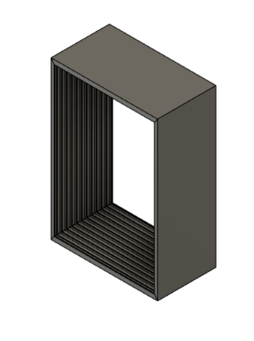 | 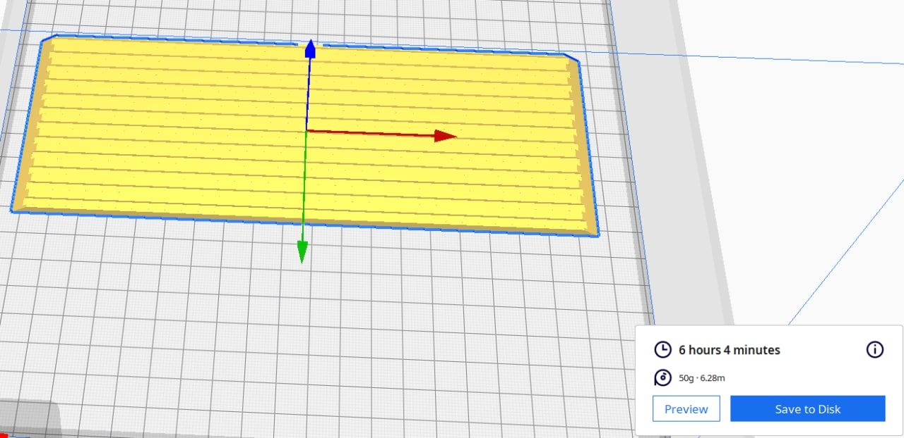 |
|---|---|
The design is simple and yet I ended up rejecting it. Do I really need to explain why?
Because it would talk over 6 hours just to print a single part and would require a ton of material just for a single part.
Spacers V2
The second design is then modified from version 1 to make my life easier
| 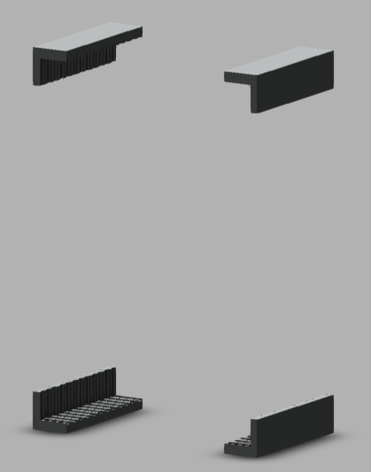 | 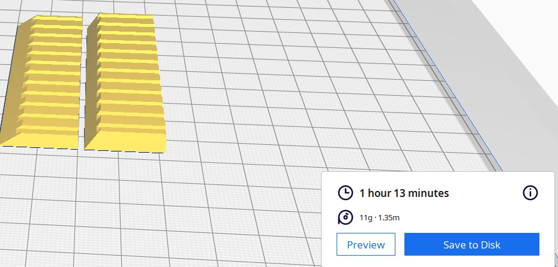 |
|---|---|
New design requires you to print it 4 times, but it's a lot faster and material friendly and can be finish in half a day. The printers in the lab comes equipped with a glass printing bed, that allows the sides of the part to be smooth without sanding. Please remember to use the guild lines when designing your parts
If you want to download holders for yourself click here!
Spacers sketch
This are the sketch for my spacers
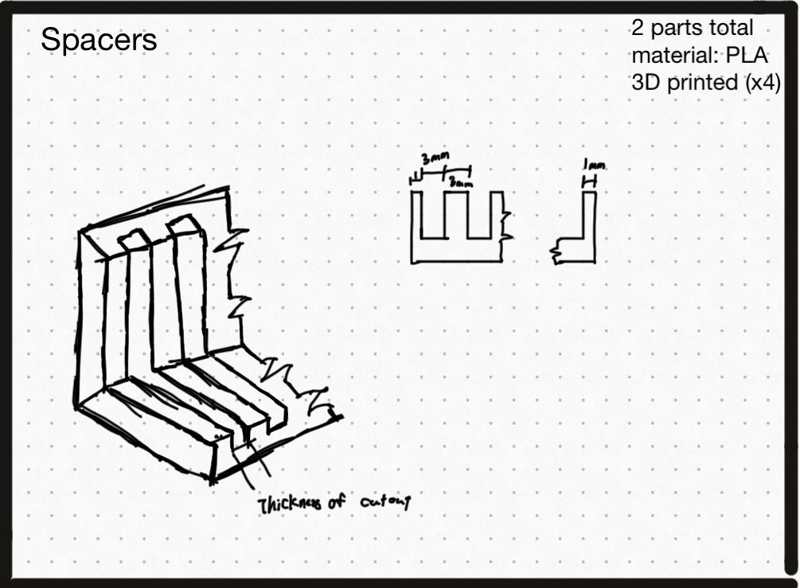
Using Fusion to print in cura
This is to show how I used Fusion to export parts to cura to 3D print
Step 1
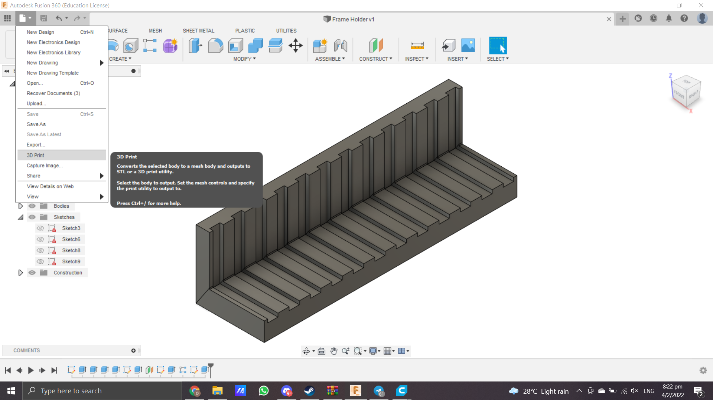
Select the option "3D print" from the option menu like the photo above
Step 2
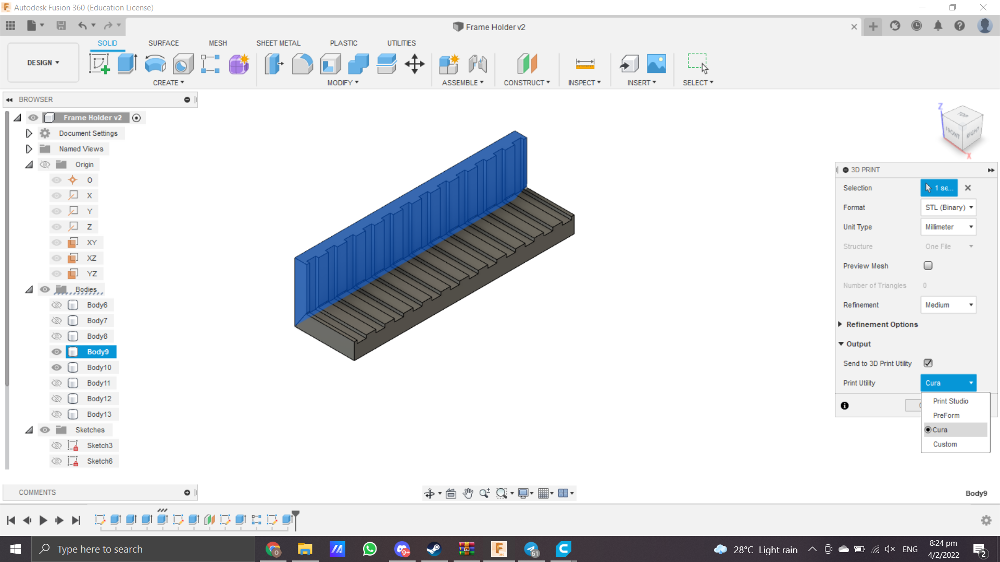
Select "STL (binary)" as your format and choose "cura(or your 3dprinting software)" under print Unity.
Step 3
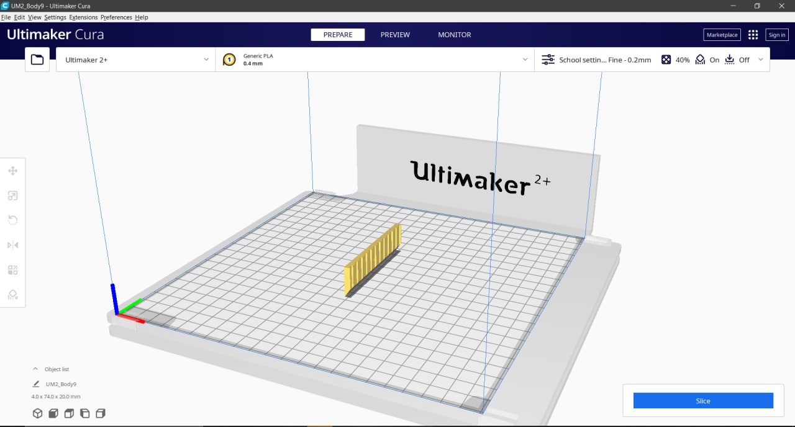
If done correctly, your part should appear in cura. All thats left to do is to choose the best printing side(This part does not require any support) and slice
Step 4
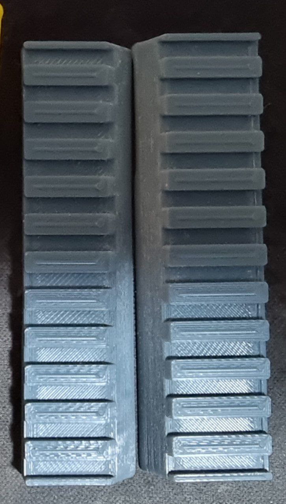
Print it out on a GLASSBED to ensure smooth sides(IMPORANT)
Assembly for 3d printed parts
Because I had to make use of the Glass bed for the printed parts, It is required to be assembled as well
Step 1
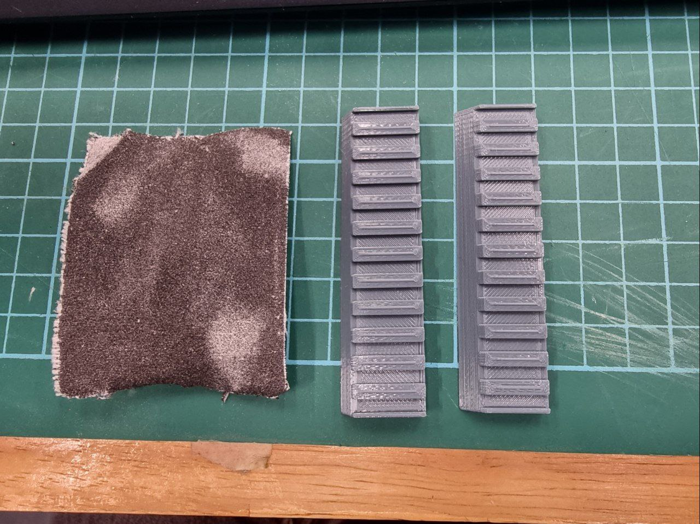
sand the hinges till it's smooth to ensure proper glueing later on.
Step 2
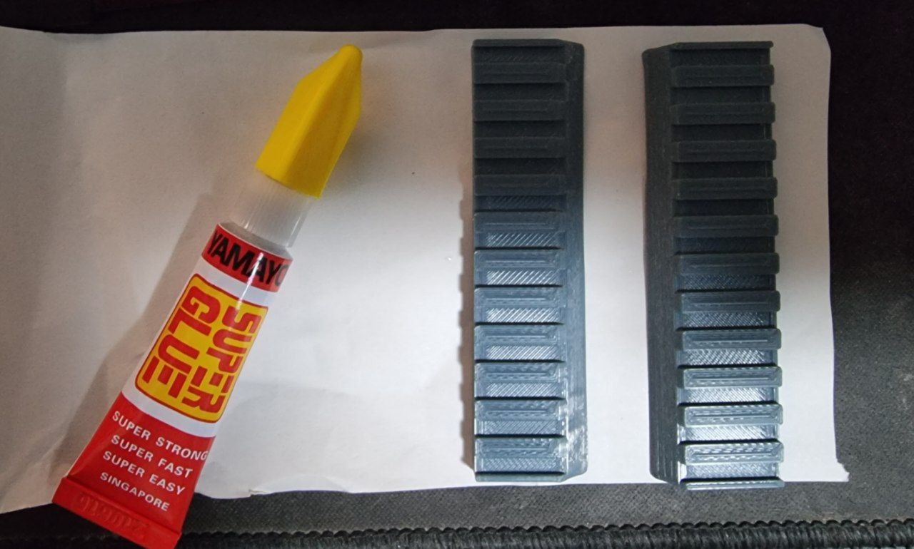
Use superglue to glue them together, I tried using hotgluing but it won't stick(trust me I wasted 20 mins trying to just spending 50c for superglue).
Take note that this part is important to take things slow as you only have 1 shot.
Step 3
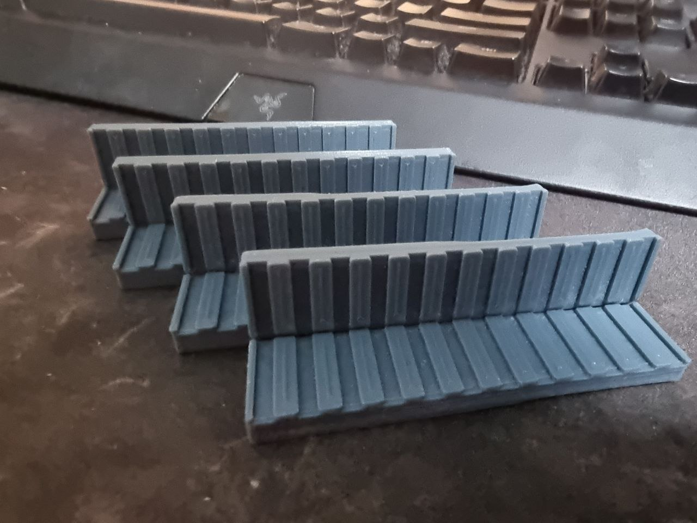